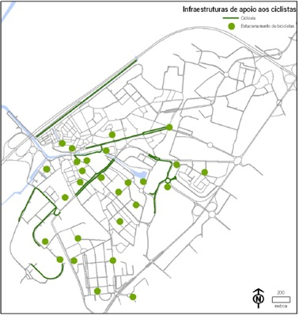

1. Extensão das ciclovias
- Águeda
O projeto de ciclovias para a cidade de Águeda prevê aproximadamente 32 quilómetros de vias cicláveis. No centro urbano de Águeda existe um conjunto de vias cicláveis com a extensão de 8 quilómetros, umas dedicadas e outras partilhadas. As ciclovias dedicadas são unidirecionais colocados no lado direito do sentido rodoviário. As ciclovias partilhadas com os peões ocupam ruas que se caraterizam pela total ausência de tráfego rodoviário. Outra das redes de ciclovias na zona de Águeda está situada na Estrada Nacional 333 com uma extensão de 11200 metros. Trata-se de dois percursos unidirecionais colocados na berma da estrada, um em cada sentido rodoviário. Ocupa o espaço entre o cruzamento de A-dos-Ferreiros e a rotunda de Assequinas. A cidade de Águeda possui também uma Ecopista com uma extensão de 2500 metros junto ao Vale do Vouga.
- Albergaria-a-Velha
O Município de Albergaria-a-Velha possui uma via ciclável entre Albergaria-a-Velha e Valmaior numa extensão de 1500 metros.
- Anadia
O Município de Anadia prevê um conjunto de infraestruturas destinadas a facilitar a circulação de bicicletas. O projeto tem como objetivo pretende interligar, através duma ciclovia, o Centro de Alto Rendimento de Anadia (Velódromo de Sangalhos) e a sede do Concelho e futuramente estabelecer uma ligação com o Parque da Curia. Anadia já possui a ciclovia do Parque da Curia que apresenta uma extensão de 2360 metros.
- Aveiro
Na cidade de Aveiro existem poucas zonas cicláveis. As zonas cicláveis que existem não são contínuas como pode ser visto na figura seguinte. As ciclovias possuem uma extensão muito pouco significativa.

- Estarreja
Estarreja possui a Ciclovia da Estrada da Varela (EN 109) com uma extensão de 11578 metros que é partilhada com o Município da Murtosa. O Projeto da CicloRia inclui além das Cidades de Ovar e Murtosa a cidade de Estarreja e pretende interligar estes lugares através duma cultura de mobilidade suave. Carateriza-se por ser uma rede de vias cicláveis numa extensão de 120 quilómetros.
- Ílhavo
A zona de Ílhavo possui mais de 20 quilómetros de zonas cicláveis. As caraterísticas do concelho de Ílhavo conferem condições favoráveis à promoção dos modos suaves. É relevante caraterizar os locais onde existem ciclovias, como os casos da ciclovia da Barra e da ciclovia da Costa Nova.
- Murtosa
O projeto de redes cicláveis do Município de Murtosa nasce de parcerias entre Autarquias e Entidades e fruto dessa parceria surge o Projeto Murtosa Ciclável. Este projeto prevê uma extensão de ciclovias na ordem dos 30 quilómetros. No centro urbano da Torreira existe uma ciclovia com 4408 metros que percorrem várias zonas no centro urbano da Torreira e com vários acessos à praia. A ciclovia ao longo da Estrada Nacional 327 desenvolve-se sempre na margem da Ria numa extensão de 4840 metros tendo início na rotunda da Ponte da Varela e final na Praia do Monte Branco. A mais extensa ciclovia dedicada pertence à zona da Varela e possui mais de 11 quilómetros. Tem início no limite entre Estarreja e Murtosa e termina junto à rotunda da Varela com a EN327. Carateriza-se por ter via dupla na maior parte do seu recurso. Existe também uma ciclovia dedicada na Avenida do Emigrante com a extensão de 2409 metros. Na Zona Escolar da Murtosa existe uma ciclovia com 1477 metros e está dividida em três segmentos na zona. O NaturRia é um percurso visitável da Natureza com uma ciclovia partilhada e possui a extensão de 17340 metros e situa-se no Cais da Ribeira Nova. O Percurso do Bunheiro completa os vários circuitos cicláveis da Murtosa e possui 1455 metros de distância ao longo da margem Nascente da Ria a Norte da Varela.
- Ovar
O Município de Ovar apresenta-se como um dos municípios com mais cultura em utilizadores do modo ciclável e esse gosto pelo uso deste modo de transporte traduz-se em 40 quilómetros de ciclovias distribuídas ao logo de todo o terreno pertencente a Ovar.
É na cidade de Esmoriz que se inicia esta rede de ciclovias. Na Avenida da Praia existe uma ciclovia partilhada com peões com uma extensão de 2855 metros.
Muito perto da Cidade de Esmoriz, existe uma outra ciclovia que se situa na Avenida da Praia de Cortegaça. A sua extensão é ligeiramente superior á de Esmoriz, e possui um total de 4884 metros e liga o Apeadeiro da CP de Cortegaça à praia.
Na Avenida D. Manuel I é possível utilizar uma ciclovia dedicada com uma extensão de 3613 metros que faz ainda ligação com o Centro Comercial, terminando num parque de estacionamento para velocípedes.
Na Avenida Dr. Francisco Sá Carneiro existe uma ciclovia com 1470 metros. Juntamente com a ciclovia da Zona Escolar de Ovar com uma extensão de 4079 metros e a ciclovia da Avenida da Régua com 3970 metros, estas três ciclovias constituem um circuito ciclável, contínuo, que envolve toda a zona Noroeste do centro da cidade.
É na Avenida do Emigrante que se encontra uma ciclovia com extensão de 2610 metros que é composta por duas vias cicláveis, uma em cada um dos sentidos da via rodoviária. Também com duas vias cicláveis é possível encontrar uma ciclovia na Avenida D. Maria II com uma extensão de 3033 metros.
Das ciclovias de Ovar, a ciclovia da Estrada de Pardilhó, está especialmente construída para fazer a ligação da Rede Municipal de Ciclovias à Ria de Aveiro com uma extensão de 4188 metros.
Umas das ciclovias mais extensas do Município de Ovar é a Ecopista do Atlântico, que liga a cidade de Esmoriz até ao Furadouro numa extensão de cerca de 10 quilómetros.
- Sever do Vouga
Em Sever do Vouga é possível utilizar a Ecopista do Vale do Vouga que surge duma pareceria entre o Município e a Refer. A ciclovia tem uma extensão de 10384 metros.
- Vagos
O Município de Vagos possui várias zonas cicláveis. A Quinta do Ega inclui percursos cicláveis para fins de lazer com a paisagem junto ao rio. Em Vagos foi construída uma pista ciclável com cerca de 2500 metros que une a Zona Industrial ao Parque de Merendas da Gafanha da Boa Hora. Na Rua de Cantanhede foi construída uma via para ciclistas com cerca de 900 metros. Mais recentemente foi inaugurada a ciclovia que liga a Vagueira à Costa Noca numa extensão de 2000 metros.